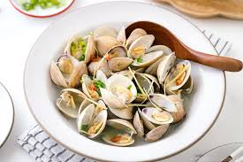

Steamed Clam Recipe

Description
Steamed clams is a favorite dish amongst sea food lovers looking for a quick and delicious snack or meal.
The recipe below will give your tongue an orgasm, which is light and playful.
Ingredients
- 2 Dozen Clams
- Garlic
- Butter
- Steamer
- Saucepan
- Water
Cooking Instructions
- Place the steamer inside the saucepan
- Add a small layer of water to cover the bottom of the pan
- Hint: Don't add too much water, you don't want the water to come above the strainer or touch the clams
- Add Clams
- Turn stove on high to boil water and begin steaming
- Cook 20 minutes
- While the clams cook melt the butter and garlic in microwave or on stove, whichever is preferred
- After 20 minutes or when clams begin to open take the clams off the stove
- Enjoy with the garlic butter concoction
Go back to the Recipe Hub